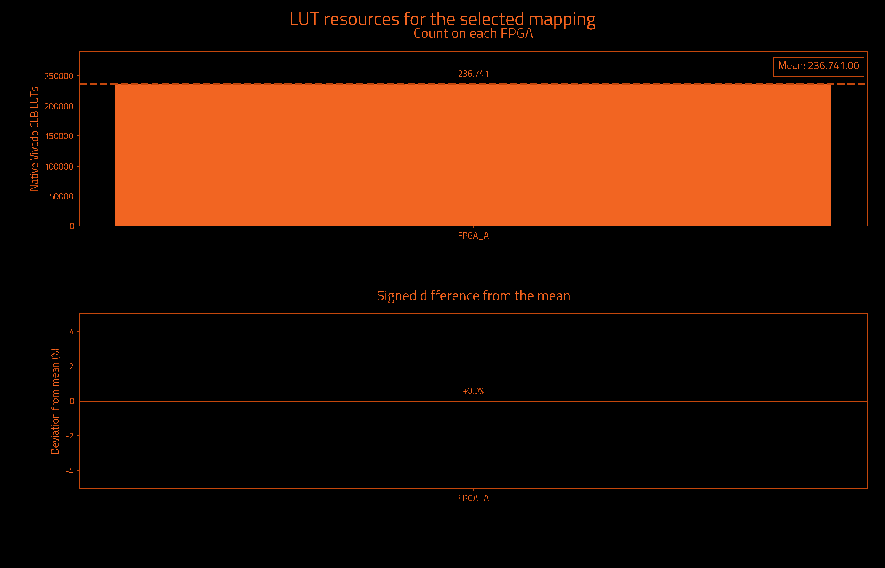
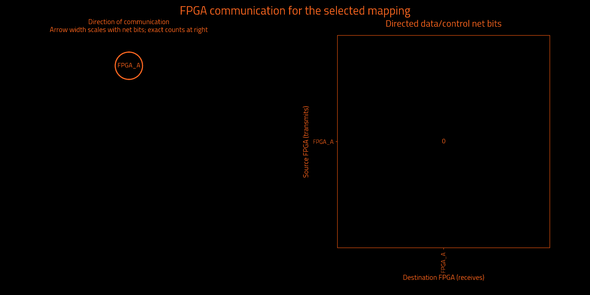

Historical measurements preserved by exact ownership equivalence · mapping.txt
Historical metrics preserved by exact ownership equivalence; not a fresh Vivado measurement.
| Selected partition | Result | Search | Result |
|---|---|---|---|
| FPGAs | 1 | Iterations requested | Unavailable |
| Native Vivado CLB LUTs | 236,741 | Iterations attempted | 1 |
| Unique data/control cut net bits | 0 | Selected iteration (zero-based) | 0 |
| Directed data/control net-bit pairs | 0 | Target board | j4.phd |
| Measurement | Result | Measurement | Result |
|---|---|---|---|
| Wall time | Unavailable | Observed CPU time | Unavailable |
| Average CPU cores | Unavailable | Average CPU use (one core = 100%) | Unavailable |
| Peak sampled process-tree memory | Unavailable | Frontend peak memory | Unavailable |
| Child processes observed | Unavailable | Sampling interval | Unavailable |
Measured through: Unavailable. CPU covers the frontend and observed descendants; sampling can miss short-lived work. Process-tree memory sums may count shared pages more than once.
No runtime measurement supplied.
Observed CPU time is a lower bound when short-lived processes escape sampling. Windows-host sampling excludes work inside WSL. Process-tree memory sums may count shared pages more than once.
| Logical FPGA | Native Vivado CLB LUTs | Device LUT utilization | Hard LUT cap | Outgoing net bits | Incoming net bits | Total I/O net bits |
|---|---|---|---|---|---|---|
| FPGA_A | 236,741 | 2.798% | 6,345,216 | 0 | 0 | 0 |
| Logical FPGA | Target device | Registers | Block RAM tiles | DSP blocks | UltraRAM blocks |
|---|---|---|---|---|---|
| FPGA_A | xcvp1902 | 232,541 | 4.0 | 0 | 0 |


| Measurement | Before local cleanup | Selected result |
|---|---|---|
| Worst minimum physical link hops without a register | 0 | 0 |
| Worst FPGA boundary crossings without a register | 0 | 0 |
| Extra crossings summed over modeled endpoints | 0 | 0 |
| Combinational primitives on transit paths | 0 | 0 |
| Directed hypergraph transfers | 0 | 0 |
| Sampled source timing paths scored | Unavailable | Unavailable |
| Weighted cost on sampled source timing paths | Unavailable | Unavailable |
| Signal category | Unique crossing net bits | Directed net-bit pairs |
|---|---|---|
| Data and functional synchronous control | 0 | 0 |
| Clock only | 0 | 0 |
| Reset only | 0 | 0 |
| Iteration | Result | Worst register-free crossings | Extra endpoint crossings | Transit primitives | Hypergraph transfers | Utilization imbalance |
|---|---|---|---|---|---|---|
| 0 | Selected best accepted mapping | 0 | 0 | 0 | 0 | 0.00% |
| Measurement | Meaning |
|---|---|
| Worst minimum physical link hops without a register | Lower bound from the declared topology, not a routed transport path. |
| Worst FPGA boundary crossings without a register | Largest ownership-change count on a modeled combinational path. |
| Extra crossings summed over modeled endpoints | Crossings beyond the first, summed over endpoints; not a distinct-net count. |
| Combinational primitives on transit paths | Logic that receives and forwards a remote signal without register capture. |
| Directed hypergraph transfers | Destination partitions beyond the first, summed over modeled hyperedges. |
| Sampled source timing paths scored | Exported Vivado timing samples, not all-path timing closure. |
| Weighted cost on sampled source timing paths | Relative ranking cost, not measured transport delay or DUT frequency. |
I/O cut load counts one outgoing multicast net once at its source and once at each receiving FPGA. Clock-only and reset-only nets are separate. Counts describe logical payload, not physical package pins or a pinmux ratio. External top-level ports have no invented FPGA home. Hypergraph transfers differ from the full net-bit census.
Deviation is 100 × (FPGA count / mean − 1); all-zero designs have 0% deviation. Device utilization and hard LUT caps are separate. Before local cleanup means this selected candidate before refinement, not necessarily the first iteration. More iterations can improve a result; the best accepted candidate is retained.
Timing sample coverage: Unavailable. Path model: primitive conservative data arcs; top IO has no FPGA home. These are source-model measurements, not achieved hardware timing.
| Logical FPGA | Physical location | Selected direct neighbors |
|---|---|---|
| FPGA_A | C01/S01/E | 0 |
| FPGA | Neighbor | Declared lanes | Wires at topology minimum compression |
|---|
The communication matrix shows signal demand. Declared links guide optimization; transport routing and physical bandwidth allocation happen later.
Resources describe original synthesized logic; future wrapper and transport resources are excluded. Mapping format, ownership and hard capacity checks are acceptance gates. Downstream regroup and hardware validation are separate.
{
"status": "HISTORICAL_METRICS_PRESERVED_BY_EXACT_OWNERSHIP_EQUIVALENCE",
"backend_version": null,
"partition_preset_requested": "default",
"frontend_sha256": "d4dd69ef7849e0e5770e1ea0173f2106b1f1ec13ccc9303f7e8eaf9f3bc7237c",
"native_timeout_seconds": 7200.0,
"native_timeout_scope": "persistent checkpoint startup and each resource request; batch commands unaffected",
"topology_sha256": "efd4489efbcf9ddc64257c8c484bb7409117585e95496f2a9dc5c19242a0fafc",
"topology_source_sha256": "6f393e7eee76cbf20cd96e46f52c8c0a34be2365c7222aa6cf7abfe87c7e1b83",
"fpga_count": 1,
"native_backend_invoked": false,
"mapping_strategy": "single_fpga_assignment_no_external_partition_solver",
"preferred_native_balance": 0.2,
"selection_policy_version": 3,
"native_balance_absolute_tolerance": 1e-12,
"effective_solver_epsilon": 0.3,
"effective_refiner_scalar_balance": 0.3,
"native_balance_search_envelope": 0.3,
"target_capacity_dependency_manifest_sha256": "18a3ac71857350176b8d15449e6cf21f106a9c902bd439a5a7d9d722c218d2c3",
"target_capacity_dependencies_sha256": {
"C:\\Users\\Wrelks\\Desktop\\upgrade_partitioner_handle_large_designs\\RapidWright\\scripts\\partition\\target_capacity.py": "652db231c4c19cfb2aa7bea140c1184d6f51162be857358b94152b3a2661f992",
"C:\\Users\\Wrelks\\Desktop\\upgrade_partitioner_handle_large_designs\\topologies\\j4_board_topology.json": "6f393e7eee76cbf20cd96e46f52c8c0a34be2365c7222aa6cf7abfe87c7e1b83",
"C:\\Users\\Wrelks\\Desktop\\upgrade_partitioner_handle_large_designs\\topologies\\j4_board_topology.json.targets.json": "25db82ebe61166d1d1998042eaa07ad9c843238119e5dd6e16e70695249afcd4",
"C:\\Users\\Wrelks\\Desktop\\upgrade_partitioner_handle_large_designs\\RapidWright\\scripts\\partition\\part_catalog\\vivado_2025_1_parts.tsv": "a402de944fbd660743f6a7ff12403060e886627439826186600da78618e6a1fe",
"C:\\Users\\Wrelks\\Desktop\\upgrade_partitioner_handle_large_designs\\RapidWright\\scripts\\partition\\part_catalog\\vivado_2025_1_parts.tsv.identity.json": "c5937f61bb02a289745eee9e8cc359b56692ed908e206cf549830da035957707"
},
"effective_logical_balance": 0.5,
"logical_balance_policy": "automatic_uniform_or_unspecified_native_caps",
"logical_balance_requested": null,
"logical_resource_capacities_explicit": false,
"engine_manifest_sha256": "b64272b8c469cffdf98ea76b1afcae5799a0fa0bc63d855ece820af18d841f8a",
"source_pair_association": {
"version": 1,
"mode": "supplied_manifest_legacy",
"original_receipt": "C:\\Users\\Wrelks\\Desktop\\upgrade_partitioner_handle_large_designs\\LSUT_2\\work\\partition_experiment\\aes64_96951b4_reference\\export_receipt.json",
"receipt_snapshot": "C:\\Users\\Wrelks\\Desktop\\upgrade_partitioner_handle_large_designs\\work\\final_j4_matrix_controller_v3\\evidence\\AES64_k1\\installed_serial_default_20261014_c90bf8ae\\inputs\\source_pair_receipt.json",
"original_receipt_sha256": "51706b8a9698d70d0b4b27916824b373e4d04003fe5670dbd1d3e8bd9ba2b9dd",
"receipt_snapshot_sha256": "51706b8a9698d70d0b4b27916824b373e4d04003fe5670dbd1d3e8bd9ba2b9dd",
"input_edif": "C:\\Users\\Wrelks\\Desktop\\upgrade_partitioner_handle_large_designs\\LSUT_2\\work\\partition_experiment\\aes64_96951b4_reference\\post_synth.edf",
"input_edif_sha256": "7fc2948596c3830462964176aa70a8cc2c794cb0c77c0b7a3d30adb6924a8d78",
"checkpoint": "C:\\Users\\Wrelks\\Desktop\\upgrade_partitioner_handle_large_designs\\LSUT_2\\work\\aes_farm\\partition_input_c64_96951b4\\mapped.dcp",
"checkpoint_sha256": "b70f97edb03784c4c50bf3d5de1c434666f8929e9acdb2f9d4de2e77a8933300",
"native_primitives": "C:\\Users\\Wrelks\\Desktop\\upgrade_partitioner_handle_large_designs\\LSUT_2\\work\\partition_experiment\\aes64_96951b4_reference\\leaf_primitives.tsv",
"native_primitives_sha256": "6ab9a32004084fa5edf922a5e353fbc3b101a00063cd318309d4fa31fd152fa3",
"producer_evidence_verified": false,
"export_run_association": "Supplied PASS manifest asserts one export association; producer command, actual native exit0 and completion are not verified",
"scope": "Exact payload and receipt-byte consistency; no arbitrary EDIF/checkpoint electrical-equivalence or cryptographic-authenticity proof"
},
"source_pair_provenance_sha256": "2f89cfda8112d258f54bc3c618c0f0fcadf292febb93d5171067d315fba21a97",
"java_heap": "16G",
"expanded_native_leaf_count": 517544,
"timing_guidance": "disabled",
"native_artifact_storage": "verified_lossless_compression",
"native_oracle_mode": "batch",
"native_residency_policy": "Probe after Java; retain only when measured available RAM covers the next heap, 8 GiB overhead and a prior-HGR native solver reserve",
"native_residency_decisions": [],
"native_oracle_scripts_sha256": {
"C:\\Users\\Wrelks\\Desktop\\upgrade_partitioner_handle_large_designs\\RapidWright\\tools\\archive_native_request.py": "1053024a0794942eeb12bcdd77827541220f05d7355089f8113cac90f42eeb6b"
},
"capture_cohort_cleanup": {
"requested": "off",
"effective": "off",
"backend_supported": true,
"reason": "requested_off"
},
"native_feedback_quality_guard": "accepted_mapping_anchor",
"quality_guard_policy": "ranked",
"minimum_link_hop_analysis_available": true,
"selected_iteration": 0,
"native_cap_check": "PASS",
"native_balance_target_met": true,
"preferred_native_balance_target_met": true,
"native_search_envelope_met": true,
"new_policy_complete_within_search_envelope": true,
"source_input": "C:\\Users\\Wrelks\\Desktop\\upgrade_partitioner_handle_large_designs\\LSUT_2\\work\\partition_experiment\\aes64_96951b4_reference\\post_synth.edf",
"source_sha256": "7fc2948596c3830462964176aa70a8cc2c794cb0c77c0b7a3d30adb6924a8d78",
"checkpoint_sha256": "b70f97edb03784c4c50bf3d5de1c434666f8929e9acdb2f9d4de2e77a8933300",
"native_inventory_sha256": "6ab9a32004084fa5edf922a5e353fbc3b101a00063cd318309d4fa31fd152fa3",
"hard_native_clb_lut_caps": {
"FPGA_A": 6345216
},
"selection_policy": "Hard capacities and one cut/topology budget; complete paths; worst minimum-link hop lower bound, logical register-free crossings, sampled source timing cost, endpoint excess, transit; native search-envelope limitation tier, transfers, topology cost, then fine balance; preferred balance remains soft",
"minimum_link_hop_scope": "Declared selected adjacency shortest-link lower bounds; not actual transport routing, congestion or nanoseconds",
"scope": "Original synthesized netlist subset utilization; no future wrapper/transport resources included",
"accepted_mapping_sha256": "b7c6ffa571a33ca19d6d42a6643983836957089d2af3b303ed31f9ef257fbd23",
"historical_metrics_scope": "Original native and source-graph measurements preserved by exact ownership equivalence; not rerun"
}{
"vivado_resources.tsv": "1a42b503e71bfd3a355f5cc0dd0a9e71ff050f654258397ce1eba390a0c9decb",
"lut_report.txt": "b9a25e724846053d5009aa0e2c5fb1d4f1580f59ddc0870821253740cef27547",
"fpga_control_categories.tsv": "25e1514c689c2ad761b296a72369d483cb3a652bed8709cbb7f3f903bd725c62",
"hardware_quality.txt": "ff92cb677a29813c7be88785fe17bf638bdf36d2c77e4d92d174791728d20e1e",
"run_provenance.json": "b32d889dda2aea7138ff3cb152cd7858b60bf3b86e4b210c33bf85443e37d64c",
"target_capacity.json": "992287febce6b4f5c7fab0890356859893398630561b555be3b570b5a31d904e",
"native_lut_caps.tsv": "443ebbe69d21de3e77aea6bd380dcea80702ea5c1f73da2e5f8c37d9cbf4f146",
"cells.txt": "9b46c8c3256a2c6b469dbce94029be89423f659d287e60d8290f141e2040635b",
"topology_manifest.json": "f9b6fe3e9bf1f7d2d3df8343bf4536dcf462f3c07aacb046099f9afff70506a4"
}{
"status": "HISTORICAL_METRICS_PRESERVED_BY_EXACT_OWNERSHIP_EQUIVALENCE",
"fresh_native_measurement": false,
"historical_mapping_sha256": "b7c6ffa571a33ca19d6d42a6643983836957089d2af3b303ed31f9ef257fbd23",
"successor_mapping_sha256": "b7c6ffa571a33ca19d6d42a6643983836957089d2af3b303ed31f9ef257fbd23",
"functional_leaves_compared": 517282,
"ownership_mismatches": 0,
"top_port_owner_unchanged": true,
"source_edif_sha256": "7fc2948596c3830462964176aa70a8cc2c794cb0c77c0b7a3d30adb6924a8d78",
"source_checkpoint_sha256": "b70f97edb03784c4c50bf3d5de1c434666f8929e9acdb2f9d4de2e77a8933300",
"proof_files_sha256": {
"prior_native_evidence.json": "cf90f0eb13a20813df707fdd697d7d33769c058e12c0cc90c6f5aa645598668d",
"reencoding_equivalence.json": "3ebaba4917654f6d25d78079cf1bf0e4eecc19319c6efbc1375793d176ecc9db",
"mapping_contract.json": "97ffe8e30e6a5eeeb11d62506b249385fd2ed1c9ae65ce7c419040bb3ffc1149",
"mapping_records.tsv": "6911c65c7733879c9c71e717fdbe6a620b20b07c41a3ddd0a514fe61ee323221",
"mapping_ownership.tsv.gz": "80ec91385e03f719b3544bee6301bf96a5c147ed0590817e0188e7b1f8cc573d"
},
"historical_artifact_sha256": {
"cells.txt": "9b46c8c3256a2c6b469dbce94029be89423f659d287e60d8290f141e2040635b",
"endpoint_kind_diagnostic.tsv": "bf46509c3999df4a2b56f0bb2b6d85501cf1765c88ad0c633008e18e36269a59",
"final_assignment.part": "d555aac9c39ccb8d95725f15038f6145ffad67746694789e62aa6c1976ce8ad7",
"fpga_control_categories.tsv": "25e1514c689c2ad761b296a72369d483cb3a652bed8709cbb7f3f903bd725c62",
"fpga_devices.tsv": "50f7a25fc43bb81f209a53853c3097e2f9c09732e306dc162274ebf0234220c8",
"fpga_io_cuts.txt": "16c3e748cfdb73f08a73e030ca9957eed7851619dc65f1c7482e2b9f639d8b6a",
"fpga_net_crossings.tsv": "46e26558d6ce9c72fb5d83cfc9b5e40575faf500060b1fda9e51fbecc78ad074",
"hardware_quality.txt": "ff92cb677a29813c7be88785fe17bf638bdf36d2c77e4d92d174791728d20e1e",
"identity.json": "7fcab5d863d5e6e45f3387ec94fd3d817df46456091ba60f1a4fc4f4966b3ca6",
"io_cuts.txt": "e3b0c44298fc1c149afbf4c8996fb92427ae41e4649b934ca495991b7852b855",
"logical_lut_report.txt": "16edb47c1dd4d2965e38a958b8edc52422f4a12ac9cbeac17f32b9f8feb5b153",
"logical_resources.tsv": "32b0aff7f273f7e36932dc415814dea9c06e9c22a73fb0e93d9bcd011b12d321",
"lut_report.txt": "b9a25e724846053d5009aa0e2c5fb1d4f1580f59ddc0870821253740cef27547",
"mapping.txt": "b7c6ffa571a33ca19d6d42a6643983836957089d2af3b303ed31f9ef257fbd23",
"metric_definitions.txt": "28c1e87b6c622b819cb9908f3ad9f58277331314f7be645e2b80c10d99238ba8",
"native_candidates.tsv": "92e6b01ba78aae39478fcf32ea5fbd26d5b85290342417e1a98ec8fdf188a1c0",
"native_complete.txt": "3f95342efd17c5b20edb7306181d9f20aa91dd1d7648bb84d24e8df375cfc0ea",
"native_lut_caps.tsv": "443ebbe69d21de3e77aea6bd380dcea80702ea5c1f73da2e5f8c37d9cbf4f146",
"parity_audit_final/00_complete_cut_category_parity.json": "7b222431fae923317de0a5a3f1347d4f864f49ca1d2a2e9c2535d855df11ff29",
"parity_audit_final/01_comparison_receipt.json": "65d86133fdd64331cf32774a1a0da71f052115bc976bb55933ac0506111d4928",
"parity_audit_final/02_AES64_k1.json": "b2ed6bb4dd757c546b81f8eb682907c54bc96ae46f250935f1a6ecf83ef795ea",
"parity_audit_final/03_metadata_receipt.json": "da3a54f37cd8e4a7b136e345c21f368cf4fa19f3ff53cc0a20309934048f98a2",
"parity_audit_final/04_comparison_inputs.json": "3884409669b14f5e164189cb4608d56d57085442ddd7700de4480707bf035b5a",
"parity_audit_final/05_owned_process_receipt.json": "74068766d87d65522f96ec2c2d1c268be898c3df05c772cf4d58fb5ff871b975",
"parity_audit_final/compact_mapping_audit.json": "0f23bd3f5b3619b4661d261ec3e44c6e5d50e88c393d54f5f1706578b08b9082",
"parity_audit_final/identity_receipt.json": "c9b064e6f227729d5e2baa9aef7580ef3041d278efa08bff9f8eb6d1722b47c9",
"primitive_counts.tsv": "034ee8a3e347d134357be6897115efd530da6a9ebfd7e75ff4eec5856390f787",
"QUALIFICATION.json": "5d788b9c07efacaea37e87a12b19398424a1665c14fff8378ca5d4931b06a105",
"refinement_passes.tsv": "35e7337e3fda53f0ee20e213013549aaa32a5c9e2ad7bb3962f739a755e85800",
"run_provenance.json": "b32d889dda2aea7138ff3cb152cd7858b60bf3b86e4b210c33bf85443e37d64c",
"source_mapping.txt": "b7c6ffa571a33ca19d6d42a6643983836957089d2af3b303ed31f9ef257fbd23",
"STATUS.json": "7cef4b6660ac6333d9b6f16ef3f8d19d2b1e54eb86b9c85f31adadd1906442da",
"swap_refinement_passes.tsv": "6acc0a2098f52118afdedd88e63a4ebeadd873cf289ac7cd0bb5e3d84892d60e",
"target_capacity.json": "992287febce6b4f5c7fab0890356859893398630561b555be3b570b5a31d904e",
"target_capacity_dependency_manifest.json": "18a3ac71857350176b8d15449e6cf21f106a9c902bd439a5a7d9d722c218d2c3",
"topology_manifest.json": "f9b6fe3e9bf1f7d2d3df8343bf4536dcf462f3c07aacb046099f9afff70506a4",
"vivado_resource_summary.txt": "05c401b7c27a02d6ba87e2b34cef05cace4b765df391b78218962b320e016393",
"vivado_resources.tsv": "1a42b503e71bfd3a355f5cc0dd0a9e71ff050f654258397ce1eba390a0c9decb",
"worst_combinational_path.tsv": "0d9ad4b5e5687b07c032cc36e44edef8a3c220c017c30420f6fb0fdb83d4ccf3"
},
"historical_metrics_directory": "C:\\Users\\Wrelks\\Desktop\\upgrade_partitioner_handle_large_designs\\RESULTS FOR J4\\AES_FARM\\1 FPGA",
"scope": "Historical source-netlist resource and connectivity measurements preserved by checked exact functional ownership and top-port owner equivalence; no new Vivado, regroup, wrapper or hardware validation"
}